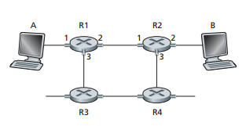
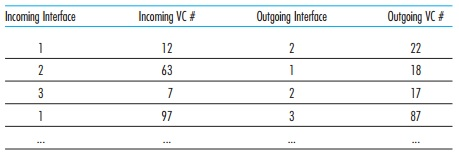
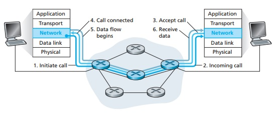

Tyler Wians
CSC 317: Computer Networks
Home → 10.13
Virtual Circuit and Datagram Networks
The network layer can provide connection and connectionless services in many ways
parallel to the transport layer. For example, a network-layer connection service begins with
handshaking between the source and destination host, while a network-layer connectionless
service does not have any handshaking preliminaries. However there are some differences:
- Network-layer services are host-to-host provided by the network-layer for the transport
layer, rather than process-to-process which is provided by the transport-layer for the application
layer.
- In all major computer network architectures to date, the network layer provides either a
host-to-host connection service or a host-to-host connectionless service. Computer
networks that provide only a connection service at the network layer are called virtual-circuit
(VC) networks, while the ones that provide only a connectionless service are called datagram
networks.
- The network-layer connection service and the transport-layer connection-oriented service are
fundamentally different, in that the latter is implemented in the end systems where as the former is
implemented in the routers in the network core as well as in the end systems.
Virtual Circuit Networks
A virtual circuit consists of:
- A path between source and destination hosts (a series of links and routers)
- VC numbers, where there is one number for each link along the path
- Entries in the forwarding table in each router along the path
A packet belonging to a virtual circuit will carry a VC number in its header. Because a virtual
circuit may have a different VC number on each link, each intervening router must replace the VC number
of each traversing packet with a new VC number. The new VC number is obtained from the forwarding table.

Host A requests that the network establish a VC between itself and Host B.
- Network chooses path A-R1-R2-B, and assigns VC numbers 12, 22, and 32 to the three links.
- When a packet leaves Host A, VC# = 12.
- When a packet leaves R1, VC# = 22.
- When a packet leaves R2, VC# = 32.
How does a the router determine the next VC number?
Each router has a forwarding table, where the VC numbers are stored.

Replacing the VC number every time it passes through the router reduces the length of the VC field in
the packet header. It also eliminates the need for additional communication between the routers because
it would need to decide on a common VC number.
In a VC network, the network's routers must maintain connection state information for the ongoing
connections. Each time a new connection is established across a router, a new entry must be added to the
router's forwarding table.
There are three identifiable phases in a virtual circuit:
- VC Setup:
- Transport-layer contacts network-layer, specifies receiver's address, waits for the network to set up the VC.
- Network-layer determines path between sender and receiver, as well as the VC numbers for each link.
- Network-layer adds entry in the forwarding table in each router.
- Network-layer may also reserve resources along the path of the VC.
- Data Transfer: Packets are being sent to the destination.
- VC Teardown
- Initiated when the sender or receiver informs the network-layer of its desire to terminate the VC.
- Network-layer informs the other end system of the call termination.
- Network-layer updates forwarding tables in each of the routers to indicate the VC no longer exists.

The messages that end systems send into the network to initiate or terminate a VC, as well as the messages passed between
the routers to set up the VC, are known as signaling messages. The protocols used to exchange these messages are often
referred to as signaling protocols.